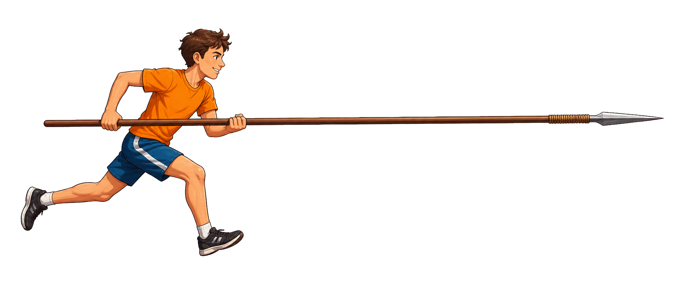

La foto del granero
Con los valores iniciales, la lanza de 10 m mide 6 m en este marco. En ese instante cabe entre las dos puertas del granero de 8 m. Ambas pueden cerrarse y abrirse a la vez sin tocarla.
L=L_0/\gamma


La lanza entra por la izquierda. Las dos marcas azules delimitan el granero y la línea naranja representa la lanza. Pulsa cada cierre: la puerta correspondiente parpadea en rojo al cerrarse y se abre inmediatamente.
Con los valores iniciales, la lanza de 10 m mide 6 m en este marco. En ese instante cabe entre las dos puertas del granero de 8 m. Ambas pueden cerrarse y abrirse a la vez sin tocarla.
El corredor mide su lanza entera y ve pasar un granero de solo 4.8 m. Primero se cierra y se abre la puerta de salida, por delante de la punta. Después se cierra la de entrada detrás de la cola.
Toma como positivo el sentido de la carrera. Del cierre de entrada al de salida hay una separación espacial positiva. Aunque en el granero ocurren a la vez, el signo negativo indica que para el corredor la salida se cierra antes.